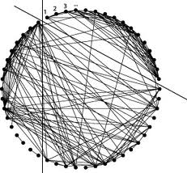

OPTIMIZED AUTOMATED ESSAY GRADER

Overall Score
| GRADE (0-5) | 2.35 |
|---|---|
| Spelling(0-5) | 4.37 |
| Grammar(0-5) | 1.93 |
| Coherence(0-5) | 0.74 |

Essay Statistics
| Word Count | 994 |
|---|---|
| Sentence Count | 3 |
| Paragraph Count | 256 |
| Average Sentence Length | 331.33 |
| Standard Deviation from the Average Sentence Length | 275.71 |

Spellings
Number of Misspelt Words ::125
Score :: 4.37
| Misspelt Word | Spelling Suggestions |
|---|---|
| 22bcs030 | [] |
| mepcolinux | ['limicoline'] |
| struct | ['strict', 'strut', 'struck', 'structure', 'destruct', 'instruct', 'obstruct'] |
| sqimp | ['simp', 'skimp', 'sq imp', 'sq-imp'] |
| isempty | ['is empty', 'is-empty', 'empty'] |
| ptr | ['pt', 'pr', 'tr', 'rpt', 'per', 'pts', 'str', 'par', 'ctr', 'ptg', 'ppr', 'phr', 'p tr', 'pt r'] |
| malloc | ['mallow', 'Mallorca'] |
| sizeof | ['size of', 'size-of', 'size'] |
| printf | ['print', 'prints', 'print f'] |
| ShortestAugmentingPath | ['Statementing'] |
| Poped | ['Pope', 'Oped', 'Roped', 'Toped', 'Loped', 'Coped', 'Doped', 'Moped', 'Hoped', 'P oped', 'Po ped', 'Po-ped', 'Pope d', 'Piped', 'Pooed'] |
| labled | ['balled', 'labeled', 'tabled', 'cabled', 'ladled', 'gabled', 'fabled', 'la bled', 'la-bled', 'lab led', 'lab-led', 'laudable', 'blabbed', 'lablab', 'bedabble'] |
| nFLow | ['n Flow', 'flow', 'inflow', 'flown'] |
| nResidue | ['n Residue', 'residue', 'nonresidual'] |
| ipMat | ['shipmate'] |
| ajMat | ['Amati'] |
| nEnter | ['n Enter', 'tenner', 'enter', 'neater', 'renter', 'netter', 'tenter', 'center', 'neuter', 'venter', 'centner', 'terrene', 'interne', 'terpene'] |
| scanf | ['scan', 'scans', 'scarf', 'scant', 'scan f', 'Scan'] |
| nFor | ['n For', 'nor', 'for'] |
| nSource | ['n Source', 'source'] |
| nDestination | ['n Destination', 'destination', 'desalination', 'designation', 'underestimation', 'detestation'] |
| nCost | ['n Cost', 'cost', 'Costco'] |
| goto | ['got', 'goo', 'goth', 'gobo', 'koto', 'Soto', 'Toto', 'go to', 'go-to', 'got o', 'Togo'] |
| nStart | ['n Start', 'start', 'instar', 'tartan'] |
| th | ['ht', 'Th', 't', 'h', 'the', 'nth', 'tho', 'thy', 'fth', 'Eth', 'eh', 'ts', 'sh', 'ti', 'ta'] |
| nSink | ['n Sink', 'sink'] |
| func | ['fun', 'fund', 'funk', 'fun c', 'Funchal'] |
| nFinal | ['n Final', 'final', 'finial', 'infernal'] |
| nMAXIMUM | ['n Maximum', 'maximum', 'maximin'] |
| makefile | ['make file', 'make-file', 'filmmaker'] |
| exe | ['exr', 'ex', 'exes', 'exec', 'ere', 'ext', 'exc', 'exp', 'eye', 'eve', 'eke', 'ewe', 'ex e', 'Ex'] |
| lqueue | ['queue', 'l queue', 'pulque'] |

Grammar
Score :: 1.93
| Sentences | Score |
|---|---|
| // | 5 |
F[i][j]=0;
R=(int **) malloc((n+1)*sizeof(int*)); //residue matrix
for(i=0;i| 5 | |
for(j=0;j| 5 | |
for(i=0;i| 5 | |
| F[i]=(int *) malloc((n+1)*sizeof(int)); | 5 |
F=(int **) malloc((n+1)*sizeof(int*)); //flow matrix
for(i=0;i| 5 | |
int **G,**F,**R;
G=(int **) malloc((n+1)*sizeof(int*)); //cost matrix
for(i=0;i| 5 | |
| j=i; if(x[2*i]>0) | 5 |
| sink have been labeled (path from source to sink found) { j=sink; while(j!=1) { if(x[(2*j)]==i) F[i][j]=F[i][j]+x[(2*sink)-1]; //add max flow value of identified path to flow graph (forward edge) else F[j][i]=F[j][i]-x[(2*sink)-1]; //sub max flow value of identified path to flow graph(backward edge) | 5 |
| adjacent vertex with backward edge } } int y=30; if(x[(2*sink)]!=0) //If | 5 |
//check for label
{
if(F[j][i]>0)
{
x[(2*j)-1]=F[j][i];
if(x[(2*i)-1]| 5 | |
| backward edges if(R[j][i]>0) if(x[(2*j)-1]==0) | 5 |
adjacent vertex with forward edge
}
}
}
for(j=2;j| 5 | |
| Queue*)); | 5 |
| [22bcs030@mepcolinux 2]$vi makefile [22bcs030@mepcolinux 2]$cat makefile exe : imp.o app.o sqimp.o cc imp.o sqimp.o app.o -o exe -lm imp.o : imp.c head.h cc imp.c -c -lm -lqueue sqimp.o : sqimp.c sq.h cc sqimp.c -c app.o : app.c head.h cc app.c -c -lm | 4 |
| i th vertex label = x[(2*i)] | 4 |
q->front=NULL;
q->rear=NULL;
push(q,source); //push source into queue
while(!isempty(q))
{
int i;
i=pop(q); // pop front vertex
printf("\n Poped vertex : %d\n",i);
for(j=1;j| 4 | |
for(j=0;j| 2 | |
| i=x[(2*i)]; else i=(-1*x[2*i]); } erase(x,n); //remove | 2 |
| ) x[(2*j)-1]=x[(2*i)-1]; x[(2*j)]= -1*i; print(x,n); push(q,j); //push | 2 |
forward edges
{
if(R[i][j]>0)
if(x[(2*j)-1]==0) //checking labled or not
{
R[i][j]=G[i][j]-F[i][j];
if(R[i][j]>0)
{
x[(2*j)-1]=R[i][j];
if(x[(2*i)-1]| 2 | |
| [22bcs030@mepcolinux 2]$cat head.h #include "stdio.h" #include "math.h" [22bcs030@mepcolinux 2]$cat sq.h #include "head.h" struct Node; struct Node { struct Node *next; int value; }; struct Queue { struct Node *front; struct Node *rear }; | 2 |
| [22bcs030@mepcolinux 2]$cat app.c #include "head.h" int main() { printf("\nEnter n : "); int j,i,n,d; scanf("%d",&n); int k,*a; int source,s=0; a=(int*)malloc((2*(n+1))*sizeof(int)); | -1 |
| [22bcs030@mepcolinux 2]$cat imp.c
#include "head.h"
#include "sq.h"
#include | -1 |
| [22bcs030@mepcolinux 2]$cat sqimp.c #include "sq.h" int isempty(struct Queue *q) { if(q->front==NULL) { return 1; } else { return 0; } } int push(struct Queue *q,int v) { struct Node *ptr; ptr = (struct Node * ) malloc(sizeof(struct Node)); ptr -> value = v; if (q->front == NULL) { q->front = ptr; q->rear = ptr; q->front -> next = NULL; q->rear -> next = NULL; } else { q->rear -> next = ptr; q->rear = ptr; q->rear -> next = NULL; } } int pop(struct Queue *q) { if(q->front==NULL) { return 0; } else { int i = q->front->value; /* struct Node *n; if(n!=q->front->next) n=q->front->next; q->front=n;*/ struct Node *ptr=q->front; q->front=q->front->next; free(ptr); return i; } } | -6 |
i th vertex residue = x[(2*i)-1]
a[1]=INFINITY;
a[2]=0;
printf("\nSink vertex : ");
scanf("%d",&d);
ShortestAugmentingPath(source,d,G,F,R,a,n); //func call
printf("\nFinal Flow Graph :\n");
display(F,n);
printf("\nFinal Residue Graph :\n");
display(R,n);
for(i=1;i| -7 | |
for(i=2;i| -11 | |
all label except for source
q->front=NULL;
q->rear=NULL;
push(q,source); // push source to queue
printf("\nFLow Graph \n");
display(F,n);
printf("\nResidue Graph \n");
display(R,n);
}
}
}
void ipMat(int **ajMat,int **R,int n)
{
int cost,j,i,s,d;
printf("\nEnter number of edges : ");
scanf("%d",&i);
for(j=0;j| -12 | |

Coherence
Score :: 0.74
| Sentences | Score |
|---|

Essay
[22bcs030@mepcolinux 2]$cat head.h#include "stdio.h"#include "math.h"
[22bcs030@mepcolinux 2]$cat sq.h#include "head.h"struct Node;struct Node{ struct Node *next; int value;};struct Queue{ struct Node *front; struct Node *rear};
[22bcs030@mepcolinux 2]$cat sqimp.c#include "sq.h"int isempty(struct Queue *q){ if(q->front==NULL) { return 1; } else { return 0; }}int push(struct Queue *q,int v){ struct Node *ptr; ptr = (struct Node * ) malloc(sizeof(struct Node));
ptr -> value = v; if (q->front == NULL) { q->front = ptr; q->rear = ptr; q->front -> next = NULL; q->rear -> next = NULL; } else { q->rear -> next = ptr; q->rear = ptr; q->rear -> next = NULL; }
}int pop(struct Queue *q){ if(q->front==NULL) { return 0; } else { int i = q->front->value; /* struct Node *n; if(n!=q->front->next) n=q->front->next; q->front=n;*/ struct Node *ptr=q->front; q->front=q->front->next; free(ptr); return i; }}[22bcs030@mepcolinux 2]$cat imp.c#include "head.h"#include "sq.h"#includevoid print(int *a,int n){ int i,j; for(i=2;i
void display(int **F,int n){ int i,j; for(i=1;i
}
void erase(int *x,int n){ int i; for(i=2;i<(n+1);i++) { x[(2*i)-1]=0; x[(2*i)]=0; }}
void ShortestAugmentingPath(int source,int sink,int **G,int **F,int **R,int *x,int n){ int j; printf("%d-- ",source); struct Queue *q; q=(struct Queue *) malloc(sizeof(struct Queue*)); q->front=NULL; q->rear=NULL; push(q,source); //push source into queue while(!isempty(q)) { int i; i=pop(q); // pop front vertex printf("\n Poped vertex : %d\n",i); for(j=1;j0) if(x[(2*j)-1]==0) //checking labled or not { R[i][j]=G[i][j]-F[i][j]; if(R[i][j]>0) { x[(2*j)-1]=R[i][j]; if(x[(2*i)-1]
} } } for(j=2;j0) if(x[(2*j)-1]==0) //check for label { if(F[j][i]>0) { x[(2*j)-1]=F[j][i]; if(x[(2*i)-1]
} } int y=30; if(x[(2*sink)]!=0) //If sink have been labeled (path from source to sink found) { j=sink; while(j!=1) {
if(x[(2*j)]==i) F[i][j]=F[i][j]+x[(2*sink)-1]; //add max flow value of identified path to flow graph (forward edge) else F[j][i]=F[j][i]-x[(2*sink)-1]; //sub max flow value of identified path to flow graph(backward edge) j=i; if(x[2*i]>0) i=x[(2*i)]; else i=(-1*x[2*i]); } erase(x,n); //remove all label except for source q->front=NULL; q->rear=NULL; push(q,source); // push source to queue printf("\nFLow Graph \n"); display(F,n); printf("\nResidue Graph \n"); display(R,n); } }}
void ipMat(int **ajMat,int **R,int n){ int cost,j,i,s,d; printf("\nEnter number of edges : "); scanf("%d",&i);
for(j=0;j
a=(int*)malloc((2*(n+1))*sizeof(int)); int **G,**F,**R; G=(int **) malloc((n+1)*sizeof(int*)); //cost matrix for(i=0;i
ipMat(G,R,n+1); //input residue matrix
printf("\nStart vertex : "); for(i=0;i<(2*(n+1));i++) a[i]=0; scanf("%d",&source); // i th vertex label = x[(2*i)] // i th vertex residue = x[(2*i)-1]
a[1]=INFINITY; a[2]=0;
printf("\nSink vertex : "); scanf("%d",&d);
ShortestAugmentingPath(source,d,G,F,R,a,n); //func call
printf("\nFinal Flow Graph :\n"); display(F,n); printf("\nFinal Residue Graph :\n"); display(R,n);
for(i=1;i
}[22bcs030@mepcolinux 2]$vi makefile[22bcs030@mepcolinux 2]$cat makefileexe : imp.o app.o sqimp.o cc imp.o sqimp.o app.o -o exe -lmimp.o : imp.c head.h cc imp.c -c -lm -lqueuesqimp.o : sqimp.c sq.h cc sqimp.c -capp.o : app.c head.h cc app.c -c -lm
[22bcs030@mepcolinux 2]$cat sq.h#include "head.h"struct Node;struct Node{ struct Node *next; int value;};struct Queue{ struct Node *front; struct Node *rear};
[22bcs030@mepcolinux 2]$cat sqimp.c#include "sq.h"int isempty(struct Queue *q){ if(q->front==NULL) { return 1; } else { return 0; }}int push(struct Queue *q,int v){ struct Node *ptr; ptr = (struct Node * ) malloc(sizeof(struct Node));
ptr -> value = v; if (q->front == NULL) { q->front = ptr; q->rear = ptr; q->front -> next = NULL; q->rear -> next = NULL; } else { q->rear -> next = ptr; q->rear = ptr; q->rear -> next = NULL; }
}int pop(struct Queue *q){ if(q->front==NULL) { return 0; } else { int i = q->front->value; /* struct Node *n; if(n!=q->front->next) n=q->front->next; q->front=n;*/ struct Node *ptr=q->front; q->front=q->front->next; free(ptr); return i; }}[22bcs030@mepcolinux 2]$cat imp.c#include "head.h"#include "sq.h"#include
void display(int **F,int n){ int i,j; for(i=1;i
}
void erase(int *x,int n){ int i; for(i=2;i<(n+1);i++) { x[(2*i)-1]=0; x[(2*i)]=0; }}
void ShortestAugmentingPath(int source,int sink,int **G,int **F,int **R,int *x,int n){ int j; printf("%d-- ",source); struct Queue *q; q=(struct Queue *) malloc(sizeof(struct Queue*)); q->front=NULL; q->rear=NULL; push(q,source); //push source into queue while(!isempty(q)) { int i; i=pop(q); // pop front vertex printf("\n Poped vertex : %d\n",i); for(j=1;j
} } } for(j=2;j
} } int y=30; if(x[(2*sink)]!=0) //If sink have been labeled (path from source to sink found) { j=sink; while(j!=1) {
if(x[(2*j)]==i) F[i][j]=F[i][j]+x[(2*sink)-1]; //add max flow value of identified path to flow graph (forward edge) else F[j][i]=F[j][i]-x[(2*sink)-1]; //sub max flow value of identified path to flow graph(backward edge) j=i; if(x[2*i]>0) i=x[(2*i)]; else i=(-1*x[2*i]); } erase(x,n); //remove all label except for source q->front=NULL; q->rear=NULL; push(q,source); // push source to queue printf("\nFLow Graph \n"); display(F,n); printf("\nResidue Graph \n"); display(R,n); } }}
void ipMat(int **ajMat,int **R,int n){ int cost,j,i,s,d; printf("\nEnter number of edges : "); scanf("%d",&i);
for(j=0;j
a=(int*)malloc((2*(n+1))*sizeof(int)); int **G,**F,**R; G=(int **) malloc((n+1)*sizeof(int*)); //cost matrix for(i=0;i
ipMat(G,R,n+1); //input residue matrix
printf("\nStart vertex : "); for(i=0;i<(2*(n+1));i++) a[i]=0; scanf("%d",&source); // i th vertex label = x[(2*i)] // i th vertex residue = x[(2*i)-1]
a[1]=INFINITY; a[2]=0;
printf("\nSink vertex : "); scanf("%d",&d);
ShortestAugmentingPath(source,d,G,F,R,a,n); //func call
printf("\nFinal Flow Graph :\n"); display(F,n); printf("\nFinal Residue Graph :\n"); display(R,n);
for(i=1;i
}[22bcs030@mepcolinux 2]$vi makefile[22bcs030@mepcolinux 2]$cat makefileexe : imp.o app.o sqimp.o cc imp.o sqimp.o app.o -o exe -lmimp.o : imp.c head.h cc imp.c -c -lm -lqueuesqimp.o : sqimp.c sq.h cc sqimp.c -capp.o : app.c head.h cc app.c -c -lm
Leleih K. Emmanuel
Natural Language Processing enthusiast
Natural Language Processing enthusiast